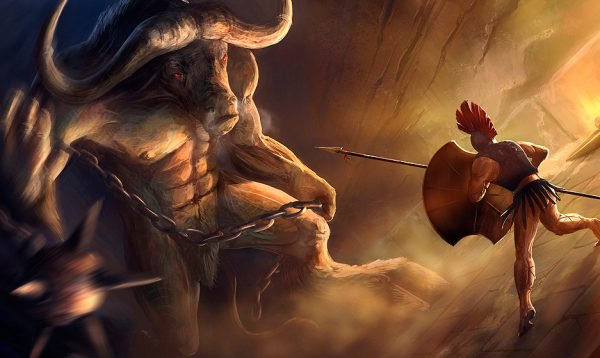
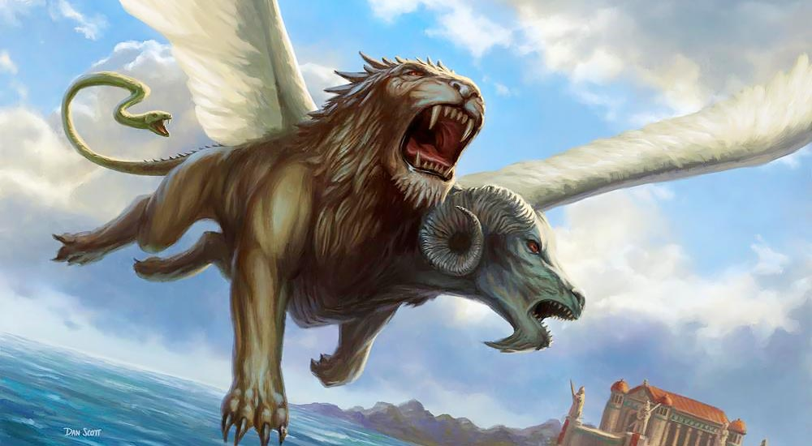
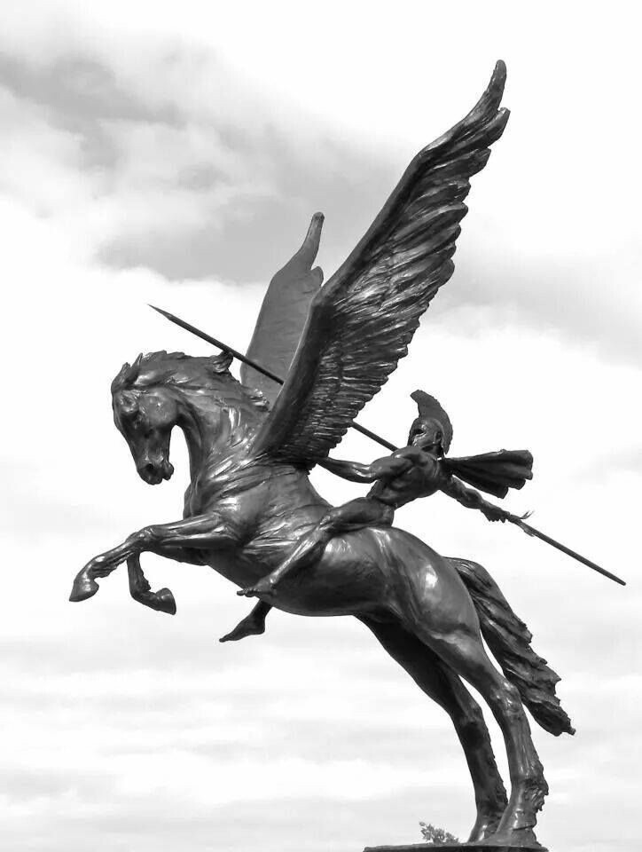
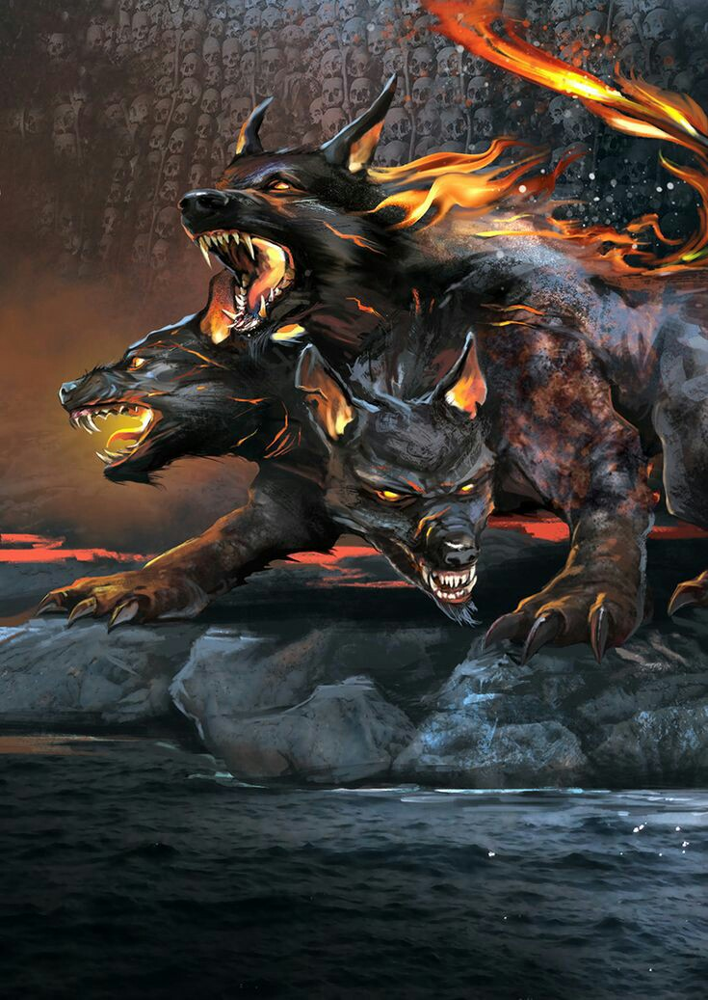

O Minotauro (touro de Minos) é uma figura mitológica criada na Grécia Antiga. Com cabeça e cauda de touro num corpo de homem, este personagem povoou o imaginário dos gregos, levando medo e terror. De acordo com o mito, a criatura habitava um labirinto na Ilha de Creta que era governada pelo rei Minos.
Conta o mito que ele nasceu em função de um desrespeito de seu pai ao deus dos mares, Poseidon. O rei Minos, antes de tornar-se rei de Creta, havia feito um pedido ao deus para que ele se tornasse o rei. Poseidon aceita o pedido, porém pede em troca que Minos sacrificasse, em sua homenagem, um lindo touro branco que sairia do mar. Ao receber o animal, o rei ficou tão impressionado com sua beleza que resolveu sacrificar outro touro em seu lugar, esperando que o deus não percebesse.
Muito bravo com a atitude do rei, Poseidon resolve castigar o mortal. Faz com que a esposa de Minos, Pasífae, se apaixonasse pelo touro. Isso não só aconteceu como também ela acabou ficando grávida do animal. Nasceu desta união o Minotauro. Desesperado e com muito medo, Minos solicitou a Dédalos que este construísse um labirinto gigante para prender a criatura. O labirinto foi construído no subsolo do palácio de Minos, na cidade de Cnossos, em Creta.

Medusa
Na mitologia grega, Medusa foi um monstro representado por uma mulher com abissais serpentes no lugar dos cabelos, presas de bronze e asas de ouro.
Do grego, Medusa significa "guardiã", "protetora" e também “sabedoria feminina”, se considerarmos o culto das amazonas à deusa serpente na Líbia.
Simbolicamente, Medusa era trágica, solitária e figura uma mulher incapaz de amar e ser amada, pois odeia os homens por ter sido seduzida e, por outro lado, odeia as mulheres, pois não se conforma em ser um monstro.
Conta o mito que Medusa foi uma sacerdotisa do templo de Atena (em algumas versões ela já era a criatura mítica, contudo, ainda não tinha sido amaldiçoada).
No entanto, Medusa é assediada amorosamente por Poseidon, o deus dos mares, cedendo aos seus encantos ao deitar com ele no templo da deusa Atena. Com isso, Atena transforma seu cabelo em serpentes e seu rosto num horrível semblante capaz de transformar em pedra todos que encontram seus olhos.
Quimera
A Quimera (Chímaira) é um ser híbrido da mitologia grega com a capacidade de lançar chamas pelo nariz. Ela é filha de dois outros monstros colossais: Equidna, com seu corpo metade serpente e metade mulher, e Tifão, o maior e mais terrível monstro das lendas gregas. Além disso era irmã da Hidra de Lerna, do Cérbero e outros monstros mitológicos.
Era uma figura com corpo de leão, e três cabeças, sendo uma também de leão, uma de cabra e outra de dragão. Esse assustador mostro ainda possuía um par de assas e uma cauda, que na verdade era uma de serpente.
Mesmo sendo um monstro tão espantoso, a Quimera era tratada como um animal de estimação pelo rei de Cária, mas um dia ela escapou e foi viver em uma montanha da Lícia.
Segundo o mito, a Quimera teria retornado ao recinto do seu dono, entretanto revoltou-se e incendiou boa parte de Cária, até que foi detida por Belerofonte e Pégaso, o cavalo alado.As primeiras representações da Quimera vieram da Anatólia, localizada na Turquia em uma parte que pertence à península da Ásia Menor. No entanto, o seu padrão físico como conhecemos atualmente só apareceu por volta do ano 7 a.C. na Grécia.A versão mais conhecida da sua lenda colocam-na como filha de Tifão e Equidna, porém há outra versão que a descreve como sendo filha da Hidra de Lerna e do Leão da Neméia, dois monstros exterminados por Hércules nos seus Doze Trabalhos.Equidna era um ser gigantesco metade mulher e metade serpente. Já Tifão era tão imenso que seus braços abertos tocavam oriente e ocidente, de seus ombros saíam cem dragões e seus olhos e boca lançavam chamas.
Embora tenha sido criada pelo rei de Cária, a Quimera fugiu e um dia retornou para se opor ao rei, bem como toda a região da Lícia.
O monstro cuspia fogo incessantemente, dizimando todos os reinos à sua frente, até que o herói grego Belerofonte com a ajuda de Pégaso, o cavalo alado, a matou.

Pégaso
um cavalo alado símbolo da imortalidade. Sua figura é originária da mitologia grega, presente no mito de Perseu e Medusa. Pégaso nasceu do sangue de Medusa quando esta foi decapitada por Perseu.
Belerofonte matou a poderosa Quimera, montando Pégaso após domá-lo com ajuda de Atena e da rédea de ouro, que em seguida tentou usá-lo para chegar ao Monte Olimpo. Mas Zeus fez com que ele derrubasse seu cavaleiro fazendo uma vespa o picar, e Belerofonte morreu devido à grande altura. Zeus o recompensou transformando-o na constelação de Pégaso, onde deveria dali em diante ficar à serviço dos deuses. Outra história diz que quando Zeus mandou a vespa e Belerofonte caiu, Atena ordenou que o chão ficasse macio, assim ele não morreria pela queda.

Cérbero
Na mitologia grega, era um monstruoso cão de três cabeças que guardava a entrada do mundo inferior, o reino subterrâneo dos mortos, deixando as almas entrarem, mas jamais saírem e despedaçando os mortais que por lá se aventurassem.
Cérbero era filho de Tifão e Equidna, irmão de Ortros e da Hidra de Lerna. Da sua união com Quimera, nasceram o Leão da Nemeia e a Esfinge.

Hidra
A Hidra, filha de Tiphon e Equidna, era uma besta metade mulher e metade serpente.
Hércules recebeu a incumbência de realizar doze trabalhos para que pudesse se redimir dos crimes cometidos. O segundo desses trabalhos consistia em vencer a Hidra, que vivia no pântano de Lerna, cujas águas eram insondavelmente profundas.
O monstro tinha um corpo como o de uma serpente e muitas horríveis cabeças. Algumas versões do mito falam em sete, enquanto outras versões dizem em até dez mil cabeças. Seu alento e inclusive o cheiro de suas pegadas era fatalmente venenosos.
Hércules, ajudado por seu primo Iolao, que conduzia a carruagem em que estavam, foi guiado até a Hidra pela deusa Atenas.
Hércules forçou o monstro a emergir para a superfície lançando contra ela uma chuva de flechas, porém longe de lhe causar algum dano, só conseguia irritá-la. Após isso ocorreu então uma luta corpo a corpo. A Hidra se enroscou em torno do corpo do semideus, que tratava de esmagar as espantosas cabeças com seu bastão, mas cada vez que lhe cortava uma cabeça, via com assombro que do pescoço mutilado surgia duas ou três que imediatamente substituía a cabeça que havia sido cortada. Hércules pediu então ajuda paraIolao, que incendiou um bosque vizinho e com esse fogo queimava cada ferida onde Hércules decepava uma cabeça, evitando assim sua regeneração. Desta forma a Hidra foi totalmente morta.